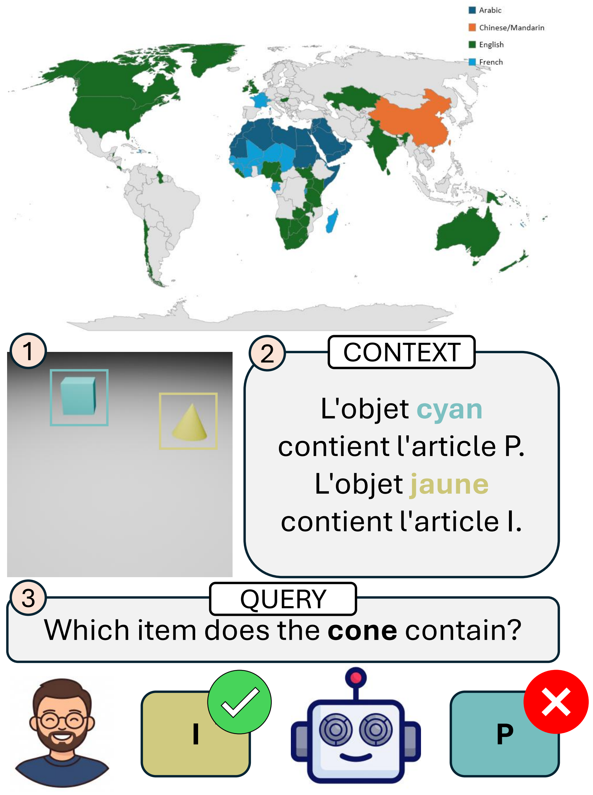

Vision-Language Models are Fragile Multilingual Associators


What does multilingual binding look like inside the model?
We render a fixed visual scene with a context that binds each object's colour to an item symbol, then query one object by its shape — varying the context and query language independently over eight languages. Because the image and gold answer are held fixed, any change isolates the effect of language. We measure the Factorization Margin (FM, the score separation between the bound item and the distractor) and locate where binding is consolidated using an interchange intervention across decoder layers. Select a context → query pair to see how association strength changes.
Binding collapses across families
FM falls from 5.45 for monolingual English to 2.80 for the Mandarin–Arabic cross-script pair — less than half its best monolingual value. Degradation is also asymmetric: a non-Latin language on the query side is consistently harder than on the context side.
| ℓctx ↓ / ℓq → | En | Fr | Zh | Ar |
|---|---|---|---|---|
| En | 0.995 / 5.45 | 0.990 / 5.20 | 0.955 / 3.85 | 0.940 / 3.40 |
| Fr | 0.990 / 5.10 | 0.995 / 5.25 | 0.945 / 3.60 | 0.930 / 3.25 |
| Zh | 0.965 / 4.10 | 0.955 / 3.85 | 0.985 / 4.95 | 0.900 / 2.80 |
| Ar | 0.950 / 3.75 | 0.940 / 3.50 | 0.905 / 2.85 | 0.975 / 4.55 |
Each cell reports Accuracy / FM; higher is better for both. Worst cases highlighted.
Where the fragility comes from
Part of it precedes the decoder, in tokenizer unfairness: in the monolingual setting, Arabic needs ~28% more tokens than English, truncates 12% of prompts, and loses 2.55 FM with no cross-lingual transfer at all. And when languages are close, binding survives — every within-family pair stays above an FM of 5.0.
Tokenization (monolingual)
| Lang | Tokens ↓ | Trunc.% ↓ | FM drop ↓ |
|---|---|---|---|
| En | 1450 | 0 | 0.00 |
| Fr | 1520 | 0 | 0.20 |
| Zh | 1720 | 5 | 1.70 |
| Ar | 1850 | 12 | 2.55 |
Within-family FM
| pair | Germanic | Romance |
|---|---|---|
| best | En–Nl 5.30 | Fr–It 5.15 |
| worst | De→· 5.00 | Es→· 5.00 |
| floor | 0.985 acc | 0.985 acc |
BibTeX
@article{chakraborty2025m2bind,
title = {Vision-Language Models are Fragile Multilingual Associators},
author = {Chakraborty, Ritabrata and Chakraborty, Rajatsubhra and
Palaiahnakote, Shivakumara and Cangelosi, Angelo and Pal, Umapada},
journal = {Preprint. Under review},
year = {2025},
url = {https://ritabrata04.github.io/m2bind/}
}